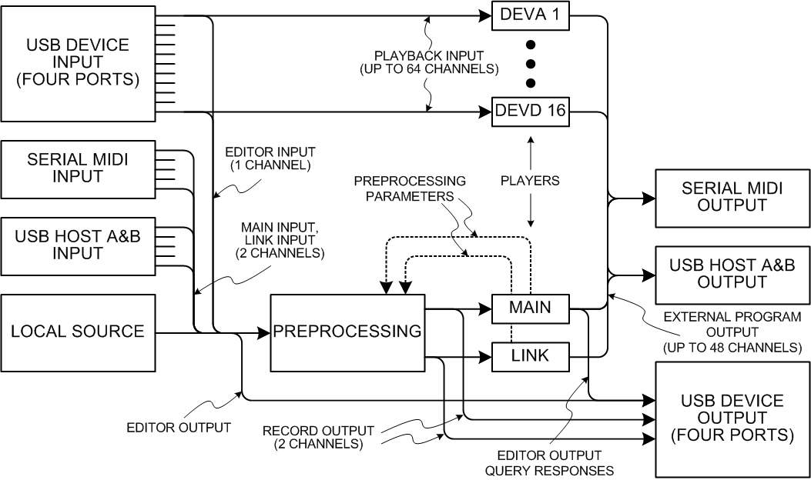

Internal message flow
Inside the Digital Chroma, all musical and programming events are represented as messages that are sent from one software module, or “object”, to another. The flow of messages looks basically like this:

The Local Source object represents the source of all performance and programming events that are generated by the Digital Chroma itself, and all such event messages emerge from its single output. In normal live use (without MIDI), these messages go to two player objects, one for the Main sound and the other for the Link sound, with some preprocessing in between that decides what notes and controls go to which. The player objects are what generate the actual sound.
The USB device port is used for connecting to an external computer, and has four virtual MIDI jacks, for a total of 64 channels. One channel can be set aside for communication with an editor like the Digital Chroma Toolkit. The device port is also used for sequence recording and playback. When recording, the Main and Link sounds can be directed to any pair of channels. When playing back, each channel has its own player.
The serial MIDI port and the two USB host ports are used for external keyboard and controller input. The global parameter MIDI Main Input parameter can intercept one channel and merge it in with the Local Source. The global MIDI Link Input parameter can intercept a second channel specifically for playing the link sound when the link mode parameter is set to Link External. Currently, the outputs from these ports are not usable for playing, but in the future it will be possible to have a special kind of program that generates MIDI output rather than sound, in which case these ports will be useful for connecting to external synth modules.
For more information, see:
- Local source
- Preprocessing
- Players